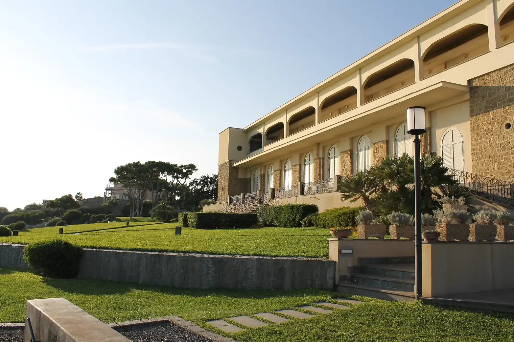
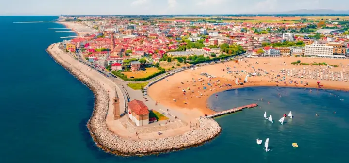
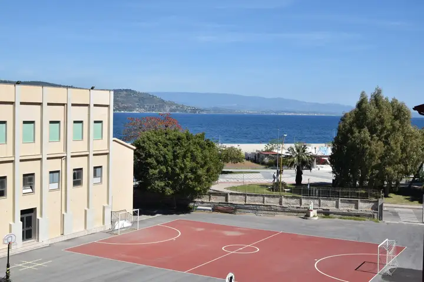

La storia dell’Altopiano di Asiago
l’Altopiano di Asiago affonda le radici nell’epoca romana e in particolare nella cultura celtica. Testimonianze di questa presenza sono ancora oggi presenti nella parlata colloquiale e nella toponomastica di tutta la zona. Dal 1310 al 1807 la Spettabile Reggenza dei Sette Comuni fu un governo autonomo e comunitario, alleato della Repubblica di Venezia. I monti e i boschi…
La storia dell’Altopiano di Asiago
l’Altopiano di Asiago affonda le radici nell’epoca romana e in particolare nella cultura celtica. Testimonianze di questa presenza sono ancora oggi presenti nella parlata colloquiale e nella toponomastica di tutta la zona. Dal 1310 al 1807 la Spettabile Reggenza dei Sette Comuni fu un governo autonomo e comunitario, alleato della Repubblica di Venezia. I monti e i boschi…
Ti sentirai come a casa
Otto case per ferie delle Figlie di Maria Ausiliatrice, dal Lago Maggiore al mare di Calabria. Per famiglie, gruppi e per chi cerca un tempo di pace.

Insieme a noi
Chi siamo
Conosciute anche come salesiane di don Bosco, le Figlie di Maria Ausiliatrice sono una congregazione religiosa presente in tutto il mondo, nata nel 1872 dal carisma di san Giovanni Bosco e di santa Maria Domenica Mazzarello.
Don Bosco scelse Maria come modello di donna capace di incarnare la “pedagogia del prendersi cura”. È lo stesso stile con cui apriamo le nostre case: accoglienza semplice, familiare, attenta alla persona. Qui soggiornano famiglie, gruppi parrocchiali, pellegrini e chiunque cerchi riposo, silenzio o un tempo di spiritualità.
Ogni struttura è unica, ma tutte condividono l’impegno per l’accoglienza, la cura e il benessere degli ospiti.
- Anno di fondazione della congregazione
- 1872
- Case per ferie in rete
- 8
- Regioni, dal Piemonte alla Calabria
- 5
Otto case, dal Lago Maggiore al mare di Calabria
Tutte gestite dalle Figlie di Maria Ausiliatrice. Scegli una casa sulla mappa o nell’elenco: ogni struttura risponde direttamente alla tua richiesta.
8 case
-
 Villa Tiberiade
Torre Annunziata (NA) · Campania
Villa Tiberiade
Torre Annunziata (NA) · Campania
-
 Villa Crawford
Sant’Agnello (NA) · Campania
Villa Crawford
Sant’Agnello (NA) · Campania
-
 Casa FMA Napoli
Napoli (NA) · Campania
Casa FMA Napoli
Napoli (NA) · Campania
-
 Casa per Ferie Maria Ausiliatrice
Roma (RM) · Lazio
Casa per Ferie Maria Ausiliatrice
Roma (RM) · Lazio
-

Casa per Ferie San Giuseppe Caorle (VE) · Veneto -
 Villa Tabor
Cesuna di Roana (VI) · Veneto
Villa Tabor
Cesuna di Roana (VI) · Veneto
- Casa per Ferie Maria Mazzarello Verbania (VB) · Piemonte
-

Casa FMA Soverato Soverato (CZ) · Calabria
La mappa si carica con la connessione. Tutte le case sono comunque nell’elenco.
Nessuna casa corrisponde a questa ricerca.
Dal blog
Tutti gli articoli
La storia dell’Altopiano di Asiago
l’Altopiano di Asiago affonda le radici nell’epoca romana e in particolare nella cultura celtica. Testimonianze di questa presenza sono ancora oggi presenti nella parlata colloquiale e nella toponomastica di tutta la zona. Dal 1310 al 1807 la Spettabile Reggenza dei Sette Comuni fu un governo autonomo e comunitario, alleato della Repubblica di Venezia. I monti e i boschi…